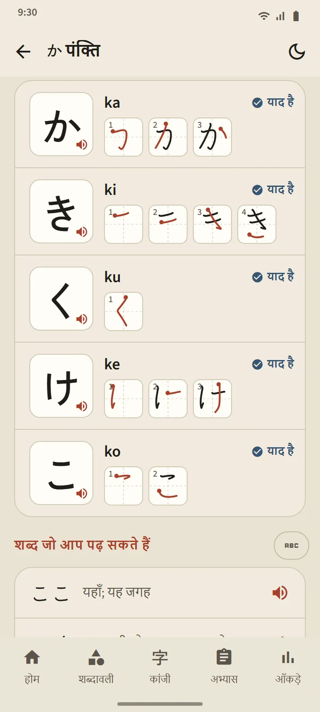
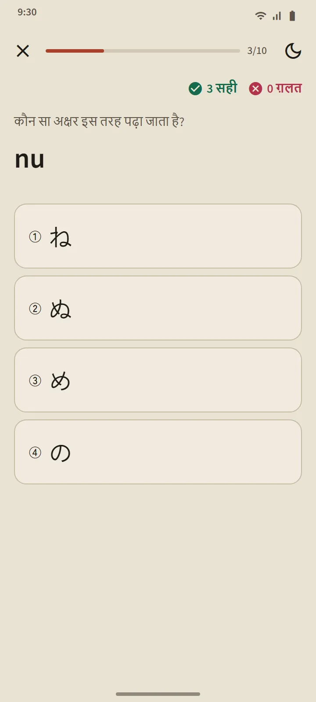

तालिका जो पाठों की सूची भी है
हिरागाना और काताकाना के पेज होम स्क्रीन के "जापानी भाषा की बुनियाद" हिस्से से खुलते हैं। ऊपर का सार कार्ड आपके याद अक्षर गिनता है; नीचे की तालिका तीन समूहों में है: मूल (46 अक्षर), चिह्न वाले (dakuten और handakuten), और संयुक्त (きゃ, しゅ, ちょ आदि)। भरा हुआ खाना याद है का संकेत है, रेखा वाला खाना यानी सीखना जारी है।
हर पंक्ति एक पाठ
तालिका की हर पंक्ति एक पाठ है: टैप करके सुनने वाले अक्षरों के खाने, रोमाजी, याद का निशान, हर अक्षर का स्ट्रोक क्रम, और "शब्द जो आप पढ़ सकते हैं": उस पंक्ति तक सीखे अक्षरों से ही बने असली शब्दकोश शब्द, जिनका रोमाजी एक बटन के पीछे रहता है ताकि आप पहले ख़ुद पढ़ने की कोशिश करें। "इस पंक्ति का क्विज़" बटन पाठ को पूरा करता है।

पढ़ने के नियम
हर तालिका का आख़िरी समूह उन नियमों को समझाता है जिन पर शुरुआत करने वाले अटकते हैं: हिरागाना में छोटा っ और दीर्घ स्वर; काताकाना में दीर्घ चिह्न ー, छोटा ッ और विदेशी शब्दों के संयोग (ファ, ティ, ウィ)। हर नियम के साथ पढ़ने लायक उदाहरण शब्द हैं।
दस प्रश्नों के क्विज़, बिना दोबारा शेड्यूल के
काना क्विज़ में तीन तरह के प्रश्न हैं: अक्षर से रोमाजी, रोमाजी से अक्षर, और आवाज़ से अक्षर। कोई अक्षर लगातार तीन सही जवाबों के बाद याद है बन जाता है, और एक ग़लती पर वापस सीख रहे हैं में लौट जाता है। शब्दों और कांजी के उलट, अक्षरों का दोबारा शेड्यूल नहीं होता: जब आप सभी को पढ़ पाने लगें, तालिका पूरी हो जाती है। क्विज़ के सार में आपका स्कोर, नए याद हुए अक्षर और जो चूक गए वे अक्षर दिखते हैं।

कहाँ से शुरू करें
ऐप पहली बार खोलने पर पूछा जाता है कि आप शून्य से शुरू कर रहे हैं या हिरागाना पढ़ सकते हैं। आपका जवाब होम पर एक सुझाव तय करता है: शुरुआत करने वालों के लिए "हिरागाना से शुरू करें", बाकी सबके लिए पहले 20 शब्द। पूरी करने के लिए कोई सूची नहीं है: वही कार्ड हर सुविधा के छोटे ट्यूटोरियल तक ले जाता है, और उसे कभी भी बंद किया जा सकता है।